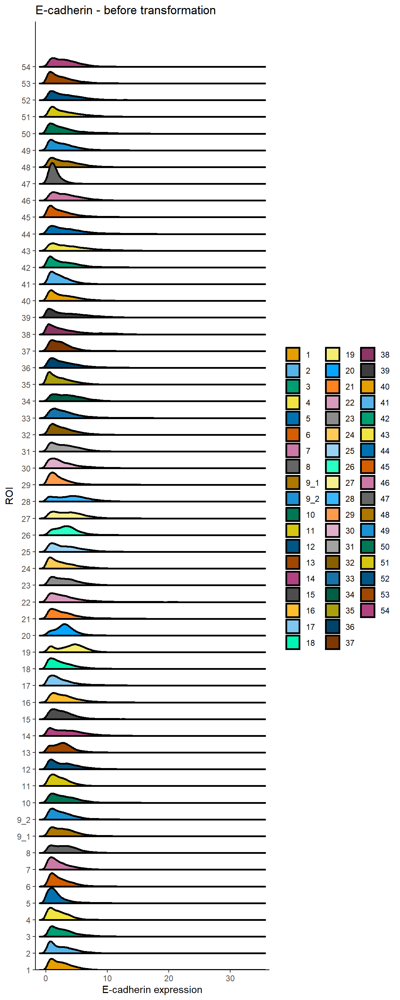
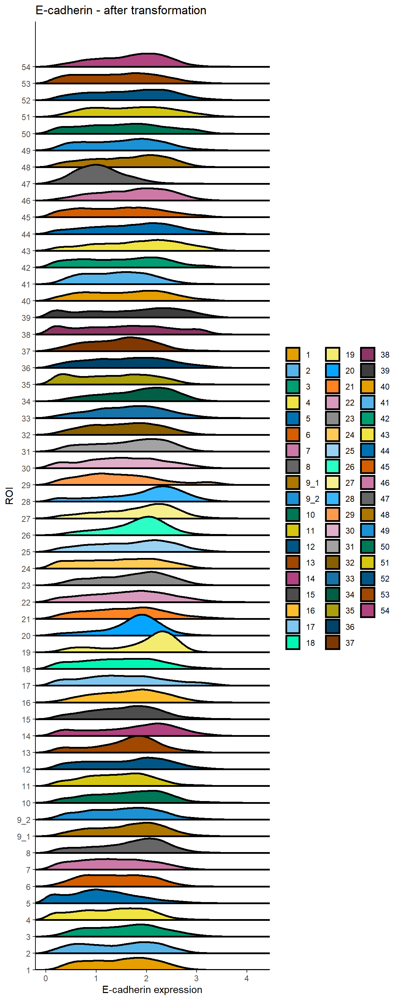
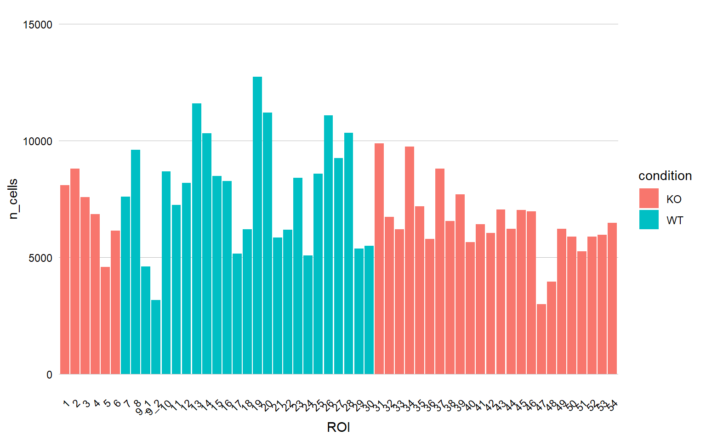

Last updated: 2023-03-21
Checks: 5 2
Knit directory: 221201_workflowr_haibin/
This reproducible R Markdown analysis was created with workflowr (version 1.7.0). The Checks tab describes the reproducibility checks that were applied when the results were created. The Past versions tab lists the development history.
Great! Since the R Markdown file has been committed to the Git repository, you know the exact version of the code that produced these results.
Great job! The global environment was empty. Objects defined in the global environment can affect the analysis in your R Markdown file in unknown ways. For reproduciblity it’s best to always run the code in an empty environment.
The command set.seed(20221201) was run prior to running
the code in the R Markdown file. Setting a seed ensures that any results
that rely on randomness, e.g. subsampling or permutations, are
reproducible.
Great job! Recording the operating system, R version, and package versions is critical for reproducibility.
To ensure reproducibility of the results, delete the cache directory
0_prep_data_cache and re-run the analysis. To have
workflowr automatically delete the cache directory prior to building the
file, set delete_cache = TRUE when running
wflow_build() or wflow_publish().
Using absolute paths to the files within your workflowr project makes it difficult for you and others to run your code on a different machine. Change the absolute path(s) below to the suggested relative path(s) to make your code more reproducible.
| absolute | relative |
|---|---|
| C:/Users/IMC Platform laptop/Users2/Tess/SteinbockCellSegmentation/221130_haibin/221201_workflowr_haibin | . |
Great! You are using Git for version control. Tracking code development and connecting the code version to the results is critical for reproducibility.
The results in this page were generated with repository version 75a88a8. See the Past versions tab to see a history of the changes made to the R Markdown and HTML files.
Note that you need to be careful to ensure that all relevant files for
the analysis have been committed to Git prior to generating the results
(you can use wflow_publish or
wflow_git_commit). workflowr only checks the R Markdown
file, but you know if there are other scripts or data files that it
depends on. Below is the status of the Git repository when the results
were generated:
Ignored files:
Ignored: .Rhistory
Ignored: .Rproj.user/
Ignored: analysis/0_prep_data_cache/
Ignored: analysis/1_QC_mask_cache/
Ignored: analysis/2_IMCA_cell_annotation_cache/
Ignored: analysis/3_dim_red_cache/
Ignored: analysis/4_img_vis_cache/
Ignored: analysis/5_spatial_vis_cache/
Ignored: analysis/6_statistics_cache/
Untracked files:
Untracked: Umap_target_overlay.pdf
Untracked: Umap_target_overlay.png
Untracked: allchannels_multidimplot.pdf
Untracked: data/images.csv
Untracked: data/images.rds
Untracked: data/img/
Untracked: data/intensities/
Untracked: data/masks.rds
Untracked: data/masks/
Untracked: data/neighbors/
Untracked: data/panel.csv
Untracked: data/raw/
Untracked: data/regionprops/
Untracked: data/sample_metadata.xlsx
Untracked: data/sample_metadata_shortened.xlsx
Untracked: output/lung_rffit.rds
Untracked: output/lung_rffit_v2.rds
Untracked: output/spe0.rds
Untracked: output/spe1.rds
Untracked: output/spe1_imca.rds
Untracked: output/spe3.rds
Untracked: output/spe4.rds
Untracked: output/spe5.rds
Untracked: output/spe_ca.rds
Untracked: output/spe_ca_v2.rds
Untracked: output/spe_ca_v2_dr.rds
Untracked: umap_metadata.png
Untracked: umap_target.png
Unstaged changes:
Modified: analysis/_site.yml
Note that any generated files, e.g. HTML, png, CSS, etc., are not included in this status report because it is ok for generated content to have uncommitted changes.
These are the previous versions of the repository in which changes were
made to the R Markdown (analysis/0_prep_data.Rmd) and HTML
(docs/0_prep_data.html) files. If you’ve configured a
remote Git repository (see ?wflow_git_remote), click on the
hyperlinks in the table below to view the files as they were in that
past version.
| File | Version | Author | Date | Message |
|---|---|---|---|---|
| Rmd | 75a88a8 | tessbrodie | 2023-03-21 | Publish the initial files for myproject |
library(imcRtools)
library(cytomapper)
library(openxlsx)
library(stringr)
library(dittoSeq)
library(RColorBrewer)
library(CATALYST)
library(gtools)#construct Spatial experiment (SPE)
spe <- read_steinbock("./data/")
#Assign sample names to cells
colnames(spe) <- paste0(spe$sample_id, "_", spe$ObjectNumber)
#Check SPE
speclass: SpatialExperiment
dim: 54 397712
metadata(0):
assays(1): counts
rownames(54): Background 1 Background 2 ... kit3 Background 6
rowData names(5): channel name keep ilastik deepcell
colnames(397712): 221031_day1_Haibin_1_6_1 221031_day1_Haibin_1_6_2 ...
221121_ROI12_24_24.2_2_7187 221121_ROI12_24_24.2_2_7188
colData names(8): sample_id ObjectNumber ... width_px height_px
reducedDimNames(0):
mainExpName: NULL
altExpNames(0):
spatialCoords names(2) : Pos_X Pos_Y
imgData names(1): sample_idcounts(spe)[1:5, 1:5] 221031_day1_Haibin_1_6_1 221031_day1_Haibin_1_6_2
Background 1 4847.2912410 4747.9544020
Background 2 38.4013842 33.2015387
Background 3 177.3327695 171.3234617
Background 4 89.0106160 87.5709229
Background 5 0.7709231 0.5982308
221031_day1_Haibin_1_6_3 221031_day1_Haibin_1_6_4
Background 1 4.753720e+03 4746.87433
Background 2 3.176408e+01 35.40512
Background 3 1.736601e+02 170.96588
Background 4 9.197408e+01 92.73050
Background 5 7.692308e-02 0.88975
221031_day1_Haibin_1_6_5
Background 1 4837.748140
Background 2 37.404429
Background 3 175.429332
Background 4 90.288858
Background 5 1.400524head(colData(spe))DataFrame with 6 rows and 8 columns
sample_id ObjectNumber area
<character> <numeric> <numeric>
221031_day1_Haibin_1_6_1 221031_day1_Haibin_1_6 1 13
221031_day1_Haibin_1_6_2 221031_day1_Haibin_1_6 2 13
221031_day1_Haibin_1_6_3 221031_day1_Haibin_1_6 3 13
221031_day1_Haibin_1_6_4 221031_day1_Haibin_1_6 4 8
221031_day1_Haibin_1_6_5 221031_day1_Haibin_1_6 5 21
221031_day1_Haibin_1_6_6 221031_day1_Haibin_1_6 6 13
axis_major_length axis_minor_length eccentricity
<numeric> <numeric> <numeric>
221031_day1_Haibin_1_6_1 5.20355 3.07692 0.806443
221031_day1_Haibin_1_6_2 5.95326 2.88068 0.875133
221031_day1_Haibin_1_6_3 5.95326 2.88068 0.875133
221031_day1_Haibin_1_6_4 3.46410 2.73861 0.612372
221031_day1_Haibin_1_6_5 6.49354 4.10210 0.775197
221031_day1_Haibin_1_6_6 5.20355 3.07692 0.806443
width_px height_px
<numeric> <numeric>
221031_day1_Haibin_1_6_1 1149 1037
221031_day1_Haibin_1_6_2 1149 1037
221031_day1_Haibin_1_6_3 1149 1037
221031_day1_Haibin_1_6_4 1149 1037
221031_day1_Haibin_1_6_5 1149 1037
221031_day1_Haibin_1_6_6 1149 1037head(spatialCoords(spe)) Pos_X Pos_Y
1 187.00000 0.8461538
2 485.30769 0.6923077
3 1039.30769 0.6923077
4 0.87500 0.8750000
5 66.42857 1.2857143
6 136.00000 0.8461538colPair(spe, "neighborhood")SelfHits object with 1720204 hits and 0 metadata columns:
from to
<integer> <integer>
[1] 2 9
[2] 3 29
[3] 3 42
[4] 3 58
[5] 5 18
... ... ...
[1720200] 397710 397683
[1720201] 397711 397673
[1720202] 397711 397675
[1720203] 397712 397636
[1720204] 397712 397696
-------
nnode: 397712head(rowData(spe))DataFrame with 6 rows and 5 columns
channel name keep ilastik deepcell
<character> <character> <numeric> <numeric> <numeric>
Background 1 ArAr80 Background 1 1 1 NA
Background 2 I127 Background 2 1 2 NA
Background 3 Xe131 Background 3 1 3 NA
Background 4 Xe134 Background 4 1 4 NA
Background 5 Ba138 Background 5 1 5 NA
1 La139 1 1 6 NA#Metadata table loading
meta <- read.xlsx("./data/sample_metadata_shortened.xlsx")
# Set patient ID and ROI and condition names
spe$patient_id <- meta$patient_id[match(spe$sample_id, meta$sample_id)]
#Factor ordering the ROI IDs for better plotting
spe$ROI <- meta$ROI[match(spe$sample_id, meta$sample_id)]
spe$ROI <- factor(spe$ROI, levels = mixedsort(unique(spe$ROI)))
spe$condition <- meta$condition[match(spe$sample_id, meta$sample_id)]
spe$annotation <- meta$annotation[match(spe$sample_id, meta$sample_id)]
spe@metadata$meta_final <- metaunique(spe$patient_id)[1] 9 7 8 5 4 3 2 1 6unique(spe$ROI) [1] 51 41 42 52 53 54 46 47 48 49 50 26 27 28 29 30 21 22 23
[20] 24 25 16 17 18 19 20 11 12 13 14 15 6 7 8 9_2 9_1 10 1
[39] 2 3 4 5 44 45 36 37 38 39 40 31 32 33 34 43 35
55 Levels: 1 2 3 4 5 6 7 8 9_1 9_2 10 11 12 13 14 15 16 17 18 19 20 21 ... 54unique(spe$condition)[1] "KO" "WT"unique(spe$annotation)[1] "M" "S" "L"dittoRidgePlot(spe, var = "E-cadherin", group.by = "ROI", assay = "counts") +
ggtitle("E-cadherin - before transformation")Picking joint bandwidth of 0.34
assay(spe, "exprs") <- asinh(counts(spe)/1)
dittoRidgePlot(spe, var = "E-cadherin", group.by = "ROI", assay = "exprs") +
ggtitle("E-cadherin - after transformation")Picking joint bandwidth of 0.112
#Exclude unwanted channels if of interest
rowData(spe)$use_channel <- grepl("a-SMA|CD19|HNFa|CD11b|F4_80|CD44|CD3e|E-cadherin|Ly6-G|CD206|Arginase-1|CD4|CD74|CD8a|Ki-67|CD31|Pan-actin|HistoneH3|DNA1|DNA2", rownames(spe))plotCounts(spe,
group_by = "ROI",
color_by = "condition") +
ylim(0, 15000)Scale for 'y' is already present. Adding another scale for 'y', which will
replace the existing scale.
saveRDS(spe, file.path("output", "spe0.rds"))
sessionInfo()R version 4.2.1 (2022-06-23 ucrt)
Platform: x86_64-w64-mingw32/x64 (64-bit)
Running under: Windows 10 x64 (build 19044)
Matrix products: default
locale:
[1] LC_COLLATE=English_Switzerland.utf8 LC_CTYPE=English_Switzerland.utf8
[3] LC_MONETARY=English_Switzerland.utf8 LC_NUMERIC=C
[5] LC_TIME=English_Switzerland.utf8
attached base packages:
[1] stats4 stats graphics grDevices utils datasets methods
[8] base
other attached packages:
[1] gtools_3.9.3 CATALYST_1.20.1
[3] RColorBrewer_1.1-3 dittoSeq_1.8.1
[5] ggplot2_3.3.6 stringr_1.4.1
[7] openxlsx_4.2.5 cytomapper_1.8.0
[9] EBImage_4.38.0 imcRtools_1.3.7
[11] SpatialExperiment_1.6.0 SingleCellExperiment_1.18.0
[13] SummarizedExperiment_1.26.1 Biobase_2.56.0
[15] GenomicRanges_1.48.0 GenomeInfoDb_1.32.2
[17] IRanges_2.30.0 S4Vectors_0.34.0
[19] BiocGenerics_0.42.0 MatrixGenerics_1.8.1
[21] matrixStats_0.62.0 workflowr_1.7.0
loaded via a namespace (and not attached):
[1] scattermore_0.8 flowWorkspace_4.8.0
[3] R.methodsS3_1.8.2 tidyr_1.2.0
[5] bit64_4.0.5 knitr_1.40
[7] irlba_2.3.5 multcomp_1.4-20
[9] DelayedArray_0.22.0 R.utils_2.12.0
[11] data.table_1.14.2 RCurl_1.98-1.7
[13] doParallel_1.0.17 generics_0.1.3
[15] flowCore_2.8.0 ScaledMatrix_1.4.0
[17] TH.data_1.1-1 callr_3.7.2
[19] terra_1.5-34 cowplot_1.1.1
[21] proxy_0.4-27 ggpointdensity_0.1.0
[23] bit_4.0.4 tzdb_0.3.0
[25] xml2_1.3.3 httpuv_1.6.5
[27] assertthat_0.2.1 viridis_0.6.2
[29] xfun_0.31 hms_1.1.2
[31] jquerylib_0.1.4 evaluate_0.16
[33] promises_1.2.0.1 fansi_1.0.3
[35] Rgraphviz_2.40.0 igraph_1.3.4
[37] DBI_1.1.3 htmlwidgets_1.5.4
[39] purrr_0.3.4 ellipsis_0.3.2
[41] backports_1.4.1 ggpubr_0.4.0
[43] ggnewscale_0.4.7 dplyr_1.0.9
[45] ggcyto_1.24.1 cytolib_2.8.0
[47] svgPanZoom_0.3.4 RcppParallel_5.1.5
[49] deldir_1.0-6 sparseMatrixStats_1.8.0
[51] vctrs_0.4.1 abind_1.4-5
[53] cachem_1.0.6 withr_2.5.0
[55] ggforce_0.3.3 aws.signature_0.6.0
[57] vroom_1.5.7 svglite_2.1.0
[59] cluster_2.1.3 crayon_1.5.1
[61] drc_3.0-1 labeling_0.4.2
[63] edgeR_3.38.1 pkgconfig_2.0.3
[65] units_0.8-0 tweenr_1.0.2
[67] vipor_0.4.5 rlang_1.0.4
[69] lifecycle_1.0.1 sandwich_3.0-2
[71] rsvd_1.0.5 rprojroot_2.0.3
[73] polyclip_1.10-0 graph_1.74.0
[75] tiff_0.1-11 Matrix_1.4-1
[77] raster_3.5-21 carData_3.0-5
[79] zoo_1.8-10 Rhdf5lib_1.18.2
[81] base64enc_0.1-3 beeswarm_0.4.0
[83] RTriangle_1.6-0.10 whisker_0.4
[85] ggridges_0.5.3 GlobalOptions_0.1.2
[87] processx_3.7.0 pheatmap_1.0.12
[89] png_0.1-7 viridisLite_0.4.1
[91] rjson_0.2.21 bitops_1.0-7
[93] shinydashboard_0.7.2 getPass_0.2-2
[95] R.oo_1.25.0 ConsensusClusterPlus_1.60.0
[97] KernSmooth_2.23-20 rhdf5filters_1.8.0
[99] DelayedMatrixStats_1.18.0 shape_1.4.6
[101] classInt_0.4-7 rstatix_0.7.0
[103] readr_2.1.2 jpeg_0.1-9
[105] ggsignif_0.6.3 aws.s3_0.3.21
[107] beachmat_2.12.0 scales_1.2.1
[109] magrittr_2.0.3 plyr_1.8.7
[111] hexbin_1.28.2 zlibbioc_1.42.0
[113] compiler_4.2.1 dqrng_0.3.0
[115] concaveman_1.1.0 plotrix_3.8-2
[117] clue_0.3-61 cli_3.3.0
[119] XVector_0.36.0 ncdfFlow_2.42.1
[121] ps_1.7.1 FlowSOM_2.4.0
[123] MASS_7.3-58 tidyselect_1.1.2
[125] stringi_1.7.8 RProtoBufLib_2.8.0
[127] highr_0.9 yaml_2.3.5
[129] BiocSingular_1.12.0 locfit_1.5-9.6
[131] latticeExtra_0.6-30 ggrepel_0.9.1
[133] grid_4.2.1 sass_0.4.2
[135] tools_4.2.1 parallel_4.2.1
[137] CytoML_2.8.0 circlize_0.4.15
[139] rstudioapi_0.14 foreach_1.5.2
[141] git2r_0.30.1 gridExtra_2.3
[143] Rtsne_0.16 farver_2.1.1
[145] ggraph_2.0.5 DropletUtils_1.16.0
[147] digest_0.6.29 shiny_1.7.2
[149] Rcpp_1.0.9 car_3.1-0
[151] broom_1.0.1 scuttle_1.6.2
[153] later_1.3.0 httr_1.4.4
[155] sf_1.0-8 ComplexHeatmap_2.12.1
[157] distances_0.1.8 colorspace_2.0-3
[159] XML_3.99-0.10 fs_1.5.2
[161] splines_4.2.1 RBGL_1.72.0
[163] scater_1.24.0 graphlayouts_0.8.0
[165] sp_1.5-0 systemfonts_1.0.4
[167] xtable_1.8-4 jsonlite_1.8.0
[169] tidygraph_1.2.1 R6_2.5.1
[171] pillar_1.8.1 htmltools_0.5.3
[173] mime_0.12 nnls_1.4
[175] glue_1.6.2 fastmap_1.1.0
[177] DT_0.24 BiocParallel_1.30.3
[179] BiocNeighbors_1.14.0 fftwtools_0.9-11
[181] class_7.3-20 codetools_0.2-18
[183] mvtnorm_1.1-3 utf8_1.2.2
[185] lattice_0.20-45 bslib_0.4.0
[187] tibble_3.1.7 curl_4.3.2
[189] ggbeeswarm_0.6.0 colorRamps_2.3.1
[191] magick_2.7.3 zip_2.2.1
[193] interp_1.1-3 survival_3.3-1
[195] limma_3.52.2 rmarkdown_2.16
[197] munsell_0.5.0 e1071_1.7-11
[199] GetoptLong_1.0.5 rhdf5_2.40.0
[201] GenomeInfoDbData_1.2.8 iterators_1.0.14
[203] HDF5Array_1.24.1 reshape2_1.4.4
[205] gtable_0.3.1